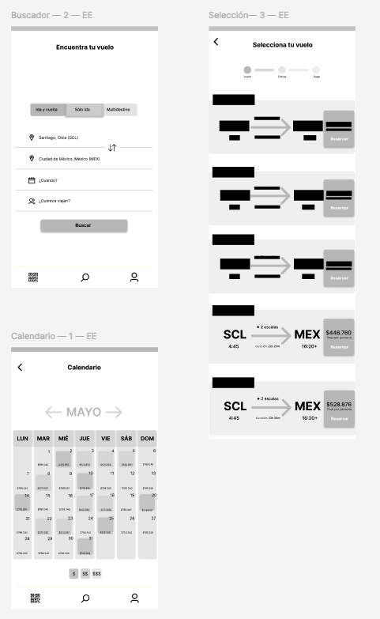
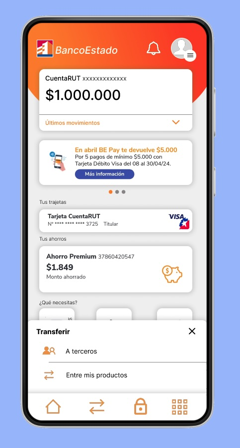
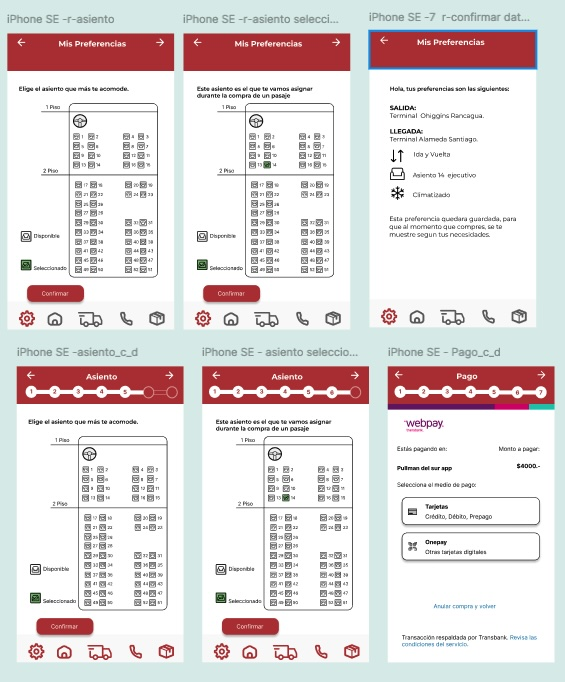

dis8636 - taller de interfaz de usuariodis8636 - studio of user interfaces
institucióninstitution
universidad diego portalesuniversidad diego portales
facultad de arquitectura, arte y diseñofaculty of architecture, arts, and design
escuela de diseñodesign school
fechasdates
primer semestre 2023 (marzo - julio)first term 2023 (march - july)
primer semestre 2024 (marzo - julio)first term 2024 (march - july)
descripción del cursocourse description
nuestra vida cotidiana está fuertemente intermediada por interfaces en diversas plataformas y soportes, que configuran a su vez uno de los elementos clave en experiencias de usuario análogas y digitales.our daily life is strongly mediated by interfaces in a wide array of platforms, which in turn configure the key elements of user experiencies, in the analog and digital realms.
este es un curso práctico y conceptual, donde abordaremos desde la investigación y metodología de trabajo con usuarios, exploración de interfaces como instrumento de prospección y uso creativo de herramientas de prototipado digital como Figma y la plataforma de programación p5.js.this is a practical and theoretical course, where we will learn strategies for research and methodological work with users, and we will explore prospective and creative interfaces with prototyping digital tools including Figma and p5.js.
con proyectos aplicados durante el semestre trabajaremos desde comprender las necesidades de los usuarios y las oportunidades que surgen en sus contextos, hasta la creación de interfaces innovadoras, conducentes tanto a generar publicaciones académicas del ámbito de interacción humano computador (HCI) como también la experimentación lúdica y creación de proyectos colaborativos con el mundo profesional.by developing applied projects during the semester, we will understand the users' needs and the design opportunities that arise. we will build innovative interfaces for both academic research of human-computer interaction (HCI), as well as playful experimentation and applications in professional contexts.
equipo docenteteaching team
sergio majluf: profesor principallead professor
aarón montoya-moraga: profesoreprofessor
andrés martin: ayudante (2024)teaching assistant (2024)
sebastián cistenas: ayudante (2023)teaching assistant (2023)